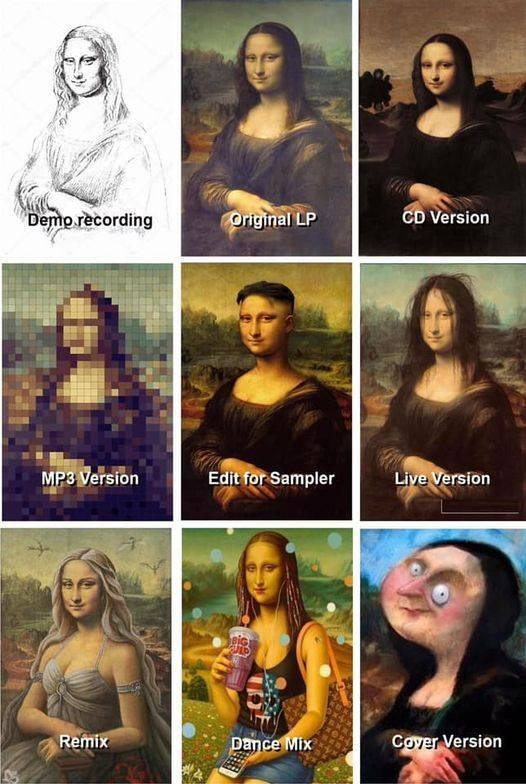

|
|---|
| Feature Article - October 2021 |
| by Do-While Jones |
If you didn't know better, you would think a missing link had been found.
The cover of Nature magazine declared that a missing link in the reptilian family tree has been found! (Don't worry, we will translate the abstract into English.)
|
|---|
|
Abstract |
(This is yet another example that the newest fossil is always the oldest, as we said last month.)
The abstract said there are three kinds of reptiles in the two branches of the mythical reptile evolutionary tree. Archosauromorphs (crocodiles, avian and non-avian dinosaurs) are in one branch. Lepidosauromorphs (squamates (lizards, snakes) and sphenodontians (tuataras)) are in the other branch. You are probably familiar with most of them--but not by their technical names.
You know what crocodiles are.
Non-avian dinosaurs are what you commonly think of as dinosaurs.
"Avian dinosaurs" is the new name for "birds." Birds have been declared to be flying (avian) dinosaurs, so birds are now lizards. If you don't believe us, just go to the American Museum of Natural History.
|
In the view of most paleontologists today, birds are living dinosaurs. In other words, the traits that we accept as defining birds -- key skeletal features as well as behaviors including nesting and brooding -- actually arose first in some dinosaurs. Most intriguing, and debated, is the evidence of feathers and featherlike structures on these dinosaurs, as seen throughout this exhibition. 2 |
Birds are dinosaurs. It must be true. Scientists say so. Don't question them.
Lepidosauromorphs are divided into squamates and sphenodontians.
Squamates are lizards and snakes. You know what they are.
Sphenodontians are tuatara. You might not know what they are.
|
Tuatara were originally classified as lizards in 1831 when the British Museum received a skull. The genus remained misclassified until 1867, when Albert Günther of the British Museum noted features similar to birds, turtles, and crocodiles. He proposed the order Rhynchocephalia (meaning "beak head") for the tuatara and its fossil relatives. At one point many disparately related species were incorrectly referred to the Rhynchocephalia, resulting in what taxonomists call a "wastebasket taxon". Williston proposed the Sphenodontia to include only tuatara and their closest fossil relatives in 1925. 3 |
What should be clear from that quote is that classification is nothing more than a matter of opinion, which could change at any time. Classification appears to be objective because specific criteria are used to determine classification--but the determination of those criteria is subjective and subject to change. Because the criteria changed, birds became dinosaurs.
Tuatara are reptiles that don't really fit neatly in any category. Since all evolutionists believe that species evolved slowly (except those like Stephen J. Gould who don't believe in gradual evolution) it should be easy for evolutionists to classify tuatara--but it isn't, so they put species like tuatara (and the platypus) in a wastebasket taxon.
Tuatara were formerly "misclassified." Now they are "correctly classified" because academics (who cannot be questioned) have decided they are properly classified, just like birds have now been properly classified as dinosaurs.  Tuatara are Sphenodontians.
Tuatara are Sphenodontians.
The article in Nature is about a reptile called Taytalura alcoberi, which is claimed to be a previously missing link in the evolution of lizards.
|
Main |
Previously there was only a handful of fossils, most of which were fragmentary, isolated pieces, which were poorly preserved and dubiously identified, which is why their "phylogenetic placements" (their imaginary places on the fictitious tree of life) are unstable (subject to frequent revision).
But now, with the discovery of this one skull, the handful of fossils has greatly increased so much that scientists have bridged the knowledge gap and know exactly how lizards evolved!
|
Here we shed light onto these questions by reporting the discovery of a three-dimensionally articulated skull of a lizard-like reptile [Taytalura alcoberi] from the Late Triassic (Carnian) of Argentina. To our knowledge, this fossil is the first and only species that is robustly supported as a stem lepidosaur using various phylogenetic methods and both morphological and molecular data (Supplementary Information), thus bridging the knowledge gap between early diapsid reptiles and lepidosauromorphs during the deployment of the lepidosaurian body plan. 5 |
Here are the top and side views of the skull in question, shown photographically and as represented by computer analysis.
 |
|---|
Having this key piece of evidence, here is what they did:
|
To investigate the phylogenetic placement [the position on the fictitious evolutionary Tree of Life] of Taytalura, we used the only available phylogenetic dataset that has a deep taxonomic sampling of both early diapsids and lepidosauromorphs, and is inclusive of both morphological and molecular data. We expanded this dataset by adding recently published taxa and characters as well as three sphenodontian species, resulting in, to our knowledge, the broadest phylogenetic taxon sampling representative of early diapsid and lepidosauromorph reptiles to date. Using maximum parsimony and Bayesian inference optimality criteria on both the morphological and combined evidence datasets (Methods), our results unambiguously estimate Taytalura as a stem lepidosaur (Fig. 2a, Extended Data Figs. 6-9). Further, it is the only taxon unambiguously recovered in this key phylogenetic position. Other species and clades that have previously been proposed to be part of this key evolutionary interval have subsequently been inferred as being more closely related to other diapsid clades or as members of the squamate stem, after the emergence--during the past two decades--of datasets that encompass much broader taxonomic samplings and improved inference methods relative to earlier work (Supplementary Information). 6 |
We are unfamiliar with the concept of an "unambiguous estimate." We are certainly uncertain about what that means.
What, you might ask, is maximum parsimony and Bayesian inference? We are glad you asked! (Well, maybe you didn't ask--but we are going to tell you anyway.)
|
Bayesian statistics is a mathematical procedure that applies probabilities to statistical problems. It provides people the tools to update their beliefs in the evidence of new data. 7 |
|
One key to understanding the essence of Bayes' theorem is to recognize that we are dealing with sequential events, whereby new additional information is obtained for a subsequent event, and that new information is used to revise the probability of the initial event. 8 |
The color commentators on Major League Baseball broadcasts are experts at Bayesian statistics. They will tell you the batter's batting average, but then modify it based on whether or not the pitcher is left- or right-handed, how well he hits with runners in scoring position, and so on. They will use this information to help you guess whether or not the batter will get a hit. (Or, you can turn off the volume and just watch the game to see if he gets on base or not.)
|
The scientific law of parsimony dictates that any example of animal behavior should be interpreted at its simplest, most immediate level. 9 |
|
What is parsimony? |
In a previous newsletter we described parsimony as being the least ridiculous explanation. It is the explanation that has the least contradictions. In evolutionary practice, it comes down to, "Which fossils look the most alike?" In this case, all the conclusions are based on the similarity of Taytalura compared to other fossils.
Consider this whimsical (but insightful) set of nine pictures posted by Cover Band Central on Facebook:
 |
|---|
Which of the other eight pictures looks most like Original LP? Looking at just the eyes, nose, and mouth, I think Remix looks most like Original LP. But if you include the background in the comparison, Live Version overall looks most like Original LP. The hair on CD Version looks the most like Original LP, only shorter. Ask your friends to tell you which picture looks most like Original LP. Opinions might vary.
Since I was a professional computer programmer for more than a third of a century, I could write a computer program which would digitize all nine pictures and compare them to produce eight similarity scores--but the result would depend upon what features I programmed the computer to compare, and what weight to give each characteristic.
How would I know if my computer program gave the correct result? If it said Cover Version was most like Original LP, I would think the program was deeply flawed, and make some changes to fix it. But if I kept making changes until it gave me what I thought was the "right" answer, it would mean I simply used the computer to reinforce my own prejudice. That's not science.
(As an aside, I tested to see if my missile simulations were correct or not by firing real missiles, and comparing the actual trajectories to simulated trajectories. If they didn't match, I adjusted the simulation. When the adjusted simulation correctly predicted the trajectories of several very different actual missile flights, we were confident that the missile simulations were accurate, so we didn't have to launch as many missiles to test out potential design changes. I didn't adjust the missile simulation until all the missiles hit the target, because that's the result management wanted. The simulations were verified experimentally.)
Facebook trolls will miss the point and say that pictures of the Mona Lisa have nothing to do with evolution. So, we will try to say it so plainly that even they can understand.
Evolutionary relationships are based on degree of similarity, which is purely subjective. Furthermore, the use of an objective computer program does not make the conclusions objective because the program reflects the programmer's subjective judgment about which characteristics are most important.
Because evolutionists have changed their opinions about the relative importance of particular characteristics, birds are now classified as dinosaurs. That's not a scientific fact.
Computer-based speculation about inheritance based on similarity is just speculation. A computer program can tell you anything you want to hear, as long as there is no way to verify it.
There is no observational or experimental evidence that actually showed a bird evolving from a dinosaur.
Bayesian statistics and parsimony are a match made in heaven. You can use new information, combined with a subjective notion of what is the least foolish, to get an objective-looking conclusion (to 6 decimal places) that confirms your subjective opinion (if you choose the data and data analysis techniques properly).
In this case,
|
Maximum parsimony analyses Bayesian inference analyses |
| Quick links to | |
|---|---|
| Science Against Evolution Home Page |
Back issues of Disclosure (our newsletter) |
| Web Site of the Month |
Topical Index |
Footnotes:
1
Ricardo N. Martínez, et al., 25 August 2021, Nature, "A Triassic stem lepidosaur illuminates the origin of lizard-like reptiles"' https://www.nature.com/articles/s41586-021-03834-3
2
https://www.amnh.org/exhibitions/fighting-dinos/birds-living-dinosaurs
3
https://en.wikipedia.org/wiki/Tuatara
4
Ricardo N. Martínez, et al., 25 August 2021, Nature, "A Triassic stem lepidosaur illuminates the origin of lizard-like reptiles"' https://www.nature.com/articles/s41586-021-03834-3
5
ibid.
7
ibid.
7
https://www.analyticsvidhya.com/blog/2016/06/bayesian-statistics-beginners-simple-english
8
http://faculty.washington.edu/tamre/BayesTheorem.pdf
9
https://www.merriam-webster.com/dictionary/parsimony
10
https://evolution.berkeley.edu/evolibrary/article/phylogenetics_08
11
Ricardo N. Martínez, et al., 25 August 2021, Nature, "A Triassic stem lepidosaur illuminates the origin of lizard-like reptiles"' https://www.nature.com/articles/s41586-021-03834-3